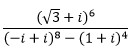

тригонометрическая форма комплексного числа
примеры решения задач
Пример 1.
Найдите .
Решение. Так как Следовательно,
Таким образом,
Точки u 0 (0 ; 1), u 1 и u2 являются вершинами правильного треугольника.
Замечание:
Для любого отличного от нуля комплексного числа z и любого натурального числа n > 2 корни степени n из числа z являются вершинами правильного n - угольника с центром в точке О (0;0). Это следует из того, что модули всех корней n-й степени равны , а углы между соседними корнями u k и
u k + 1 равны
Пример 2.
Используя тригонометрическую форму комплексного числа, произведите указанные действия:
Решение. Представим сначала каждое из чисел в тригонометрической форме:
Поэтому
.
Ответ: 2 + 2i.
проверь себя
Задание 1.
Используя тригонометрическую форму комплексного числа, произведите указанные действия:
1) √3 + i;
2)  ;
;
3) 2i;
4) √2.
Ответ:
Задание 2.
Вычислите:
1) -63;
2) 5;
3) 7i;
4) 1 - i.
Ответ:
Задание 3.
Выразите cos3x и sin3x через cosx и sinx
1) cos3x = cosx + sinx ; sin3x = 2 cosx - 5 sin2x;
2) cos3x = 4 cos3x + 3 cosx ; sin 3x = 3 sin x + sin3x;
3) cos3x = 4 cos3x - 3 cosx ; sin 3x = 3 sin x - 4 sin3x
4) cos3x = cos5x + 3 cosx ; sin 3x = 3 sin x - sin5x.
Ответ:
Задание 4.
Пользуясь корнями третьей степени из 1, вычислите
1) i; √5 + 2i; 3 - i;
2) √5 + i;
3) 5i; √3;
4) 2i; -√3 - i; √3 - i.
Ответ:
Задание 5.
Вычислите
1) ± (1 - 2i);
2) (1 + 2i);
3) ± 5i;
4) 3 - 2i.
Ответ:
реши сам
Задание 1.
Представьте в тригонометрической форме следующие комплексные числа:
1) 2;
2) -2;
3) 2i;
4) 1 + i;
5) -1 + i√3.
Задание 2.
Найдите аргументы следующих комплексных чисел:
1) cosφ - isinφ;
2) sinφ + icosφ;
3) -sinφ - icosφ;
4) -cosφ - isinφ;
5) sinφ - icosφ.
Задание 3.
Найдите аргументы следующих комплексных чисел, если argz = φ, | z | = 1
1) u = z 4 - z 2;
2) v = z 3 - i.
Задание 4.
Вычислите:
1)
2) 
3)
4)
5) .
Задание 5.
Выразите через sinx и cosx
1) sin3x, cos3x;
2) sin4x, cos4x;
3) sin6x, cos6x.
Задание 6.
Выразите tg4x и tg6x через tgx.
Задание 7.
Докажите, что при любом n ∈ N и
Задание 8.
Докажите, что
1) 
2)
Задание 9.
Пусть n ∈ N, n > 1, c ≠ 0, c ∈ R. Решите уравнения:
1) (x + c) n - (x - c) n = 0;
2) (x + ci) n - (x - ci) n = 0;
3) (x + ci) n + i (x - ci) n = 0;
4) (x + ci) n - (cos α + i sin α)(x - ci) n = 0 (α ≠ 2kπ).
Задание 10.
Найдите первообразные корни из единицы следующих степеней:
1) 2;
2) 3;
3) 4;
4) 6;
5) 9.